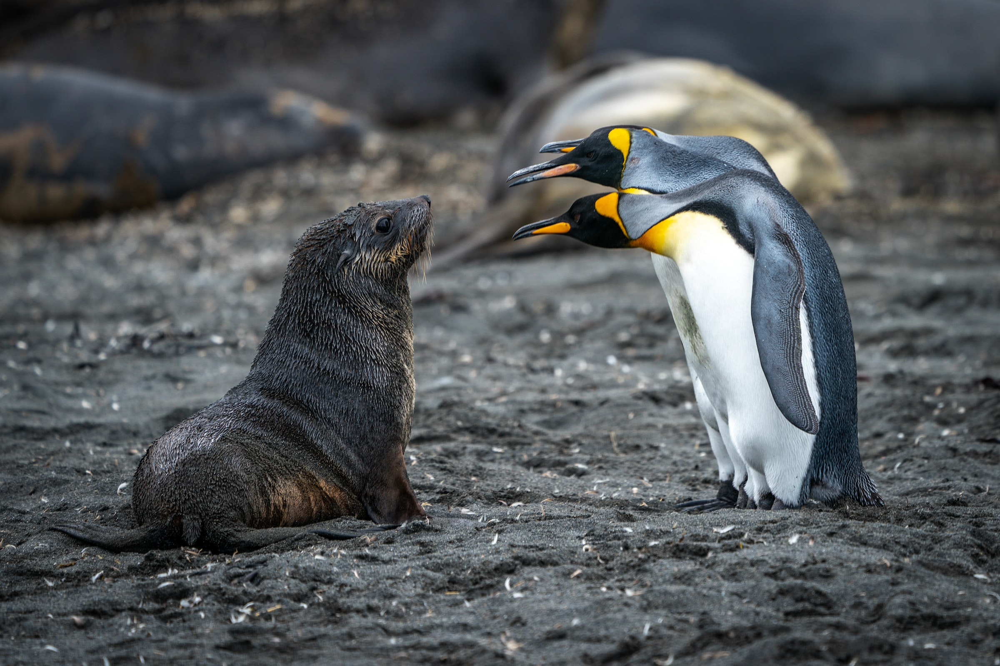
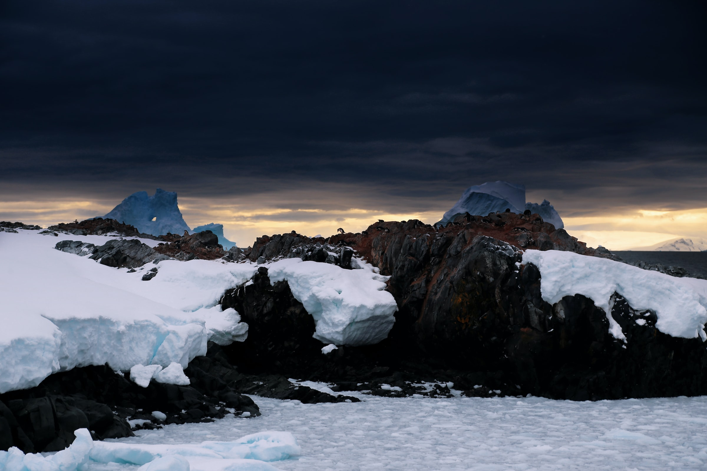
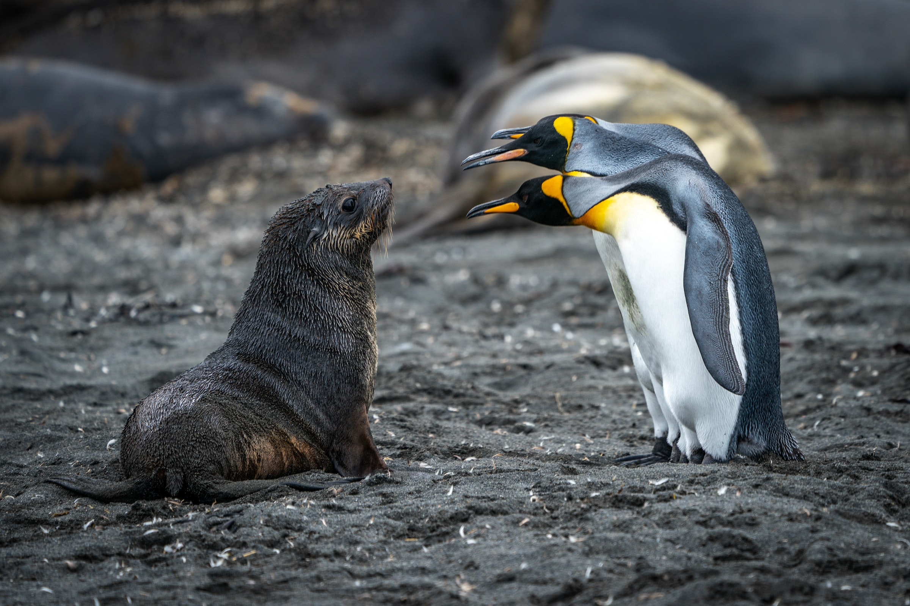
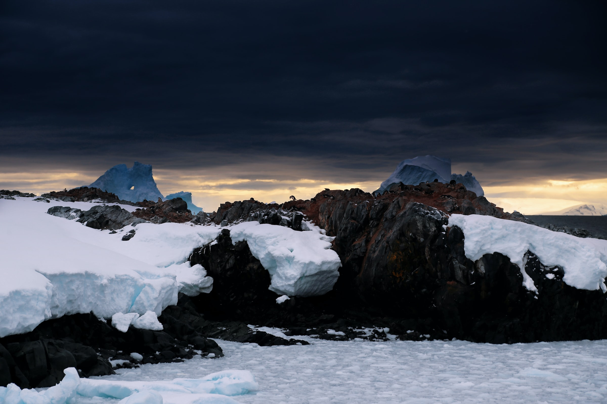

ANTARCTICA
Antarctica is Earth's southernmost and least-populated continent.
Situated almost entirely south of the Antarctic Circle and surrounded by
the Southern Ocean, it contains the geographic South Pole. Antarctica is
the fifth-largest continent, being nearly twice the size of Australia
and larger than Europe, and has an area of 14,200,000 km2.
Most of Antarctica is covered by ice, with an average thickness of 1.9
km (1.2 mi). Antarctica is on average the coldest, driest, and windiest
of the continents, and it has the highest average elevation. It is
mainly a polar desert, with annual precipitation of over 200 mm (8 in)
along the coast and far less inland.
About 70% of the world's freshwater reserves are frozen in Antarctica,
which if melted would raise global sea levels by almost 60 metres (200
ft). Antarctica holds the record for the lowest measured temperature on
Earth, −89.2 °C (−128.6 °F). The coastal regions can reach temperatures
over 10 °C (50 °F) in summer.
Native species of animals include mites, nematodes, penguins, seals and
tardigrades. Where vegetation occurs, it is mostly in the form of lichen
or moss.
The ice shelves of Antarctica were probably first seen in 1820, during a
Russian expedition led by Fabian Gottlieb von Bellingshausen and Mikhail
Lazarev. The decades that followed saw further exploration in French,
American, and British expeditions. The first confirmed landing was by a
Norwegian team in 1895. In the early 20th century, there were a few
expeditions into the interior of the continent.
British explorers were the first to reach the magnetic South Pole in
1909, and the geographic South Pole was first reached in 1911 by
Norwegian explorers.
 


